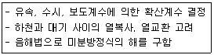
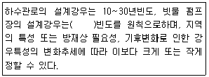
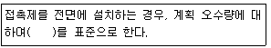
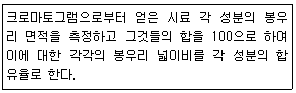
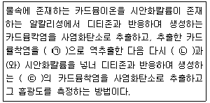
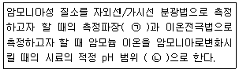
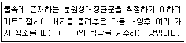
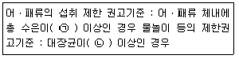
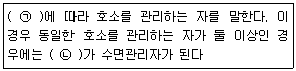
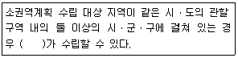

수질환경기사 (2019-04-27 기출문제)
1과목: 수질오염개론
1. 물의 특성에 관한 설명으로 옳지 않은 것은?
- 밀도 : g/cm3
- 동점성계 : cm2/sec
- 표면장력 : dyne/cm2
- 점성계수 : g/cmㆍsec
(정답률: 74%)

2. 산성강우에 대한 설명으로 틀린 것은?
- 주요원인물질은 유황산화물, 질소산화물, 염산을 들 수있다.
- 대기오염이 혹심한 지역에 국한되는 현상으로 비교적 정확한 예보가 가능하다.
- 초목의 잎과 토양으로부터 Ca++, Mg++, K+등의 용출 속도를 증가시킨다.
- 보통 대기 중 탄산가스와 평형상태에 있는 물은 약 pH 5.6의 산성을 띠고 있다.
(정답률: 84%)
3. 적조(Red Tide)에 관한 설명으로 틀린 것은?
- 갈수기로 염도가 증가된 정체 해역에서 주로 발생한다.
- 수중 용존산소 감소에 의한 어패류의 폐사가 발생된다.
- 수괴의 연직안정도가 크고 독립해 있을 때 발생한다.
- 해저에 빈산소층이 형성할 때 발생한다.
(정답률: 73%)
4. 연속류 교반 반응조(CFSTR)에 관한 내용으로 틀린 것은?
- 충격부하에 강하다
- 부하변동에 강하다
- 유입된 액체의 일부분은 즉시 유출된다
- 동일 용량 PFR에 비해 제거효율이 좋다.
(정답률: 71%)
5. 하천 모델 중 다음의 특징을 가지는 것은?

- QUAL-1
- WQRRS
- DO SAG-1
- HSPE
(정답률: 76%)
6. 곰팡이(Fungi)류의 경험적 화학 분자식은?
- C12H7O4N
- C12H8O5N
- C10H17O6N
- C10H18O4N
(정답률: 84%)
7. 호수의 부영양화에 대한 일반적 영향으로 틀린 것은?
- 부영양화가 진행된 수원을 농업용수로 사용하면 영양염류의 공급으로 농산물 수확량이 지속적으로 증가한다.
- 조류나 미생물에 의해 생성된 용해성 유기물질이 불쾌한맛과 냄새를 유발한다.
- 부영양화 평가모델은 인(P)부하모델인 Vollenweider 모델 등이 대표적이다.
- 심수층의 용존산소량이 감소한다
(정답률: 79%)
8. 미생물 영양원 중 유황(sulfur)에 관한 설명으로 틀린 것은?
- 황산화세균은 편성 혐기성 세균이다.
- 유황을 함유한 아미노산은 세포 단백질의 필수 구성원이다.
- 미생물세포에서 탄소 대 유황의 비는 100:1 정도이다.
- 유황고정, 유황화합물 산화, 환원 순으로 변환된다.
(정답률: 66%)
9. 호수의 수질특성에 관한 설명으로 옳지 않은 것은?
- 표수층에서 조류의 활발한 광합성 활동시 호수의 pH는 8∼9 혹은 그 이상을 나타낼 수 있다.
- 호수의 유기물량 측정을 위한 항목은 COD보다 BOD와 클로로필-a를 많이 이용한다.
- 수심별 전기전도도의 차이는 수온의 효과와 용존된 오염물질의 농도차로 인한 결과이다.
- 표수층에서 조류의 활발한 광합성 활동시에는 무기탄소 원인 HCO3-나 CO32-을 흡수하고 OH-를 내보낸다.
(정답률: 67%)
10. 0℃에서 DO 7.0mg/L인 물의 DO 포화도는 몇 %인가? (단, 대기의 화학적 조성 중 O2 는 21%(V/V), 0℃에서 순수한물의 공기 용해도는 38.46mL/L, 1기압 기준 기타 조건은 고려하지 않음)
- 약 61%
- 약 74%
- 약 82%
- 약 87%
(정답률: 31%)
11. 다음의 유기물 1mole 이 완전 산화될 때 이론적인 산소요구량 (ThOD)이 가장 작은 것은?
- C6H6
- C6H12O6
- C2H5OH
- CH3COOH
(정답률: 73%)
12. 건조고형물량이 3000kg/day인 생슬러지를 저율혐기성소화조로 처리한다. 휘발성고형물은 건조고형물의 70%이고 휘발성고형물의 60%는 소화에 의해 분해된다. 소화된 슬러지의 총고형물은 몇 kg/day인가?
- 1040 kg/day
- 1740 kg/day
- 2040 kg/day
- 2440 kg/day
(정답률: 70%)
13. 소수성 콜로이드의 특성으로 틀린 것은?
- 물과 반발하는 성질을 가진다.
- 물 속에 현탁상태로 존재한다.
- 아주 작은 입자로 존재한다.
- 염에 큰 영향을 받지 않는다.
(정답률: 79%)
14. 생물농축에 대한 설명으로 가장 거리가 먼 것은?
- 수생생물의 체내의 각종 중금속 농도는 환경수중의 농도보다는 높은 경우가 많다.
- 생물체중의 농도와 환경수중의 농도비를 농축비 또는 농축계수라고 말한다.
- 수생생물의 종류에 따라서 중금속의 농축비가 다르게 되어 있는 것이 많다.
- 농축비는 먹이사슬 과정에서 높은 단계의 소비자에 상당하는 생물 일수록 낮게 된다.
(정답률: 81%)
15. 25℃, 2atm의 압력에 있는 메탄가스 5.0kg을 저장하는데 필요한 탱크의 부피는? (단, 이상기체의 법칙 적용, R =0.082 Lㆍatm/molㆍK)(오류 신고가 접수된 문제입니다. 반드시 정답과 해설을 확인하시기 바랍니다.)
- 약 3.8m3
- 약 5.3m3
- 약 7.6m3
- 약 9.2m3
(정답률: 59%)
16. 우리나라 연평균강수량은 약 1300mm 정도로 세계 연평균 강수량 970mm에 비해 많은편이지만, UN에서는 물 부족 국가로 인정하고 있다. 이는 우리나라 하천의 특성에 의한 것인데, 그러한 이유로 타당하지 않은 것은?
- 계절적인 강우분포의 차이가 크다.
- 하상계수가 작다.
- 하천의 경사도가 급하다.
- 하천의 유역면적이 작고 길이가 짧다.
(정답률: 76%)
17. 호소의 성층현상에 관한 설명으로 옳지 않은 것은?
- 수온 약층은 순환층고 정체층의 중간층에 해당되고 변온층이라고도 하며 수온이 수심에 따라 크게 변화된다.
- 호소수의 성층현상은 연직 방향의 밀도차에 의해 층상으로 구분되어지는 것을 말한다.
- 겨울 성층은 표층수의 냉각에 의한 성층이며 역성층이라고도 한다.
- 여름 성층은 뚜렷한 층을 형성하며 연직온도경사와 분자확산에 의한 DO구배가 반대 모양을 나타낸다.
(정답률: 81%)
18. 프로피온산(C2H5COOH) 0 .1M 용액이 4% 이온화 된다면 이온화 정수는?
- 1.7⨯10-4
- 7.6⨯10-4
- 8.3⨯10-5
- 9.3⨯10-5
(정답률: 50%)
19. 1차 반응에 있어 반응 초기의 농도가 100mg/L 이고, 4시간 후에 10mg/L로 감소되었다. 반응 2시간 후의 농도(mg/L)는?
- 17.8
- 24.8
- 31.6
- 42.8
(정답률: 69%)
20. Formaldehyde(CH2O) 500mg/ℓ의 이론적 COD값은?
- 약 512 mg/ℓ
- 약 533 mg/ℓ
- 약 553 mg/ℓ
- 약 576 mg/ℓ
(정답률: 66%)
2과목: 상하수도계획
21. 계획오수량에 관한 설명 중 틀린 것은?
- 계획시간 최대오수량은 계획 1일 최대오수량의 1시간당 수량의 1.3~1.8배를 표준으로 한다.
- 지하수량은 1인 1일 최대 오수량의 20%이하로 한다.
- 합류식의 우천시 계획오수량은 원칙적으로 계획 1일 최대오수량의 1.5배 이상으로 한다.
- 계획 1일 평균 오수량은 계획 1일 최대 오수량의 70~80%를 표준으로 한다.
(정답률: 67%)
22. 취수지점으로부터 정수장까지 원수를 공급하는 시설 배관은?
- 취수관
- 송수관
- 도수관
- 배수관
(정답률: 75%)
23. 호소, 댐을 수원으로 하는 경우의 취수시설인 취수틀에 관한 설명으로 틀린 것은?
- 하천이나 호소 바닥이 안정되어 있는 곳에 설치한다.
- 선박의 항로에서 벗어나 있어야 한다.
- 호소의 표면수를 안정적으로 취수할 수 있다.
- 틀의 본체를 하천이나 호소 바닥에 견고하게 고정시킨다.
(정답률: 72%)
24. 우수배제계획에서 계획우수량의 설계강우에 관한 내용으로( ) 에 알맞은 것은?

- 15~20년
- 20~30년
- 30~50년
- 50~100년
(정답률: 69%)
25. 하수처리시설 중 소독시설에서 사용하는 오존의 장단점으로 틀린 것은?
- 병원균에 대하여 살균작용이 강하다.
- 철 및 망간의 제거능력이 크다.
- 경제성이 좋다.
- 바이러스의 불활성화 효과가 크다
(정답률: 73%)
26. 하수관거시설인 오수관거의 유속범위기준으로 옳은 것은?
- 계획시간최대오수량에 대하여 유속을 최소 0.3m/sec, 최대 3.0m/sec 로 한다.
- 계획시간최대오수량에 대하여 유속을 최소 0.6m/sec, 최대 3.0m/sec 로 한다.
- 계획1일최대오수량에 대하여 유속을 최소 0.3m/sec, 최대 3.0m/sec 로 한다.
- 계획1일최대오수량에 대하여 유속을 최소 0.6m/sec, 최대 3.0m/sec 로 한다.
(정답률: 55%)
27. 강우강도가 2mm/min, 면적 1.0km2, 유입시간 6분, 유출계수가 0.65인 경우 우수량(m3/sec)은? (단, 합리식 적용)
- 21.7
- 0.217
- 1.30
- 13.0
(정답률: 57%)
28. 막여과법을 정수처리에 적용하는 주된 선정 이유로 옳지 않은 것은?
- 응집제를 사용하지 않거나 또는 적게 사용한다.
- 막의 특성에 따라 원수 중의 현탁물질, 콜로이드, 세균류, 크립토스포리디움 등 일정한 크기 이상의 불순물을 제거할 수 있다.
- 부지면적이 종래보다 적을 뿐 아니라 시설의 건설공사 기간도 짧다.
- 막의 교환이나 세척 없이 반영구적으로 자동운전이 가능하여 유지관리 측면에서 에너지를 절약할 수 있다.
(정답률: 73%)
29. 약품주입설비와 점검에 대한 설명으로 틀린것은?
- 응집약품을 납품받고 저장하기 위하여 적절한 검수용 계량장비를 설치한다.
- 약품저장설비는 구조적으로 안전하고 약품의 종류와 성상에 따라 적절한 재질로 한다.
- 저장설비의 용량은 계획정수량에 각 약품의 최대 주입률을 곱하여 산정한다.
- 저장설비 용량은 응집제는 30일분 이상, 응집보조제는 10일분 이상으로 한다.
(정답률: 53%)
30. 계획하수량에 관한 설명으로 옳은 것은?
- 합류식 하수도에서 일차침전지까지 처리장내 연결관로는 계획시간 최대 오수량으로 한다.
- 합류식 하수도에서 우천시에는 계획시간최대오수량을 유입시켜 2차처리해야 한다.
- 합류식 하수도는 우천시 일차침전지의 침전시간을 0.5시간 이상 확보하도록 한다.
- 합류식 하수도의 소독시설 계획하수량은 계획시간최대오수량으로 한다.
(정답률: 42%)
31. 상수처리시설 중 플록형성지의 플록형성표준시간은? (단, 계획정수량 기준)
- 5 ~ 10 분간
- 10 ~ 20 분간
- 20 ~ 40 분간
- 40 ~ 60 분간
(정답률: 74%)
32. 생물막을 이용한 처리방식의 하나인 접촉산화법을 적용하여 오수를 처리할 때 반응조내 오수의 교반과 용존산소 유지를 위한 송풍량에 관한 내용으로 ( ) 에 옳은 것은?

- 2배
- 4배
- 6배
- 8배
(정답률: 46%)
33. 펌프의 수격작용(water hammer)에 관한 설명으로 가장 거리가 먼 것은?
- 관내 물의 속도가 급격히 변하여 수압의 심한 변화를 야기하는 현상이다.
- 정전 등의 사고에 의하여 운전 중인 펌프가 갑자기 구동력을 소실할 경우에 발생할 수 있다.
- 펌프계에서의 수격현상은 역회전 역류, 정회전 역류, 정회전 정류의 단계로 진행된다.
- 펌프가 급정지할 때는 수격작용 유무를 점검해야 한다.
(정답률: 69%)
34. 상수처리를 위한 정수시설인 급속여과지에 관한 설명으로 틀린 것은?
- 여과속도는 120~150m/day를 표준으로 한다.
- 플록의 질이 일정한 것으로 가정하였을 때 여과층의 필요두께는 여재입경에 반비례한다.
- 여과면적은 계획정수량을 여과속도로 나누어 계산한다.
- 여과지 1지의 여과면적은 150m2 로 한다.
(정답률: 65%)
35. 취수시설인 침사지에 관한 설명으로 틀린 것은?
- 표면부하율은 500∼800mm/min을 표준으로 한다.
- 지내 평균유속은 2∼7cm/sec를 표준으로 한다.
- 지의 상단높이는 고수위보다 0.6∼1m의 여유고를 둔다.
- 지의 유효수심은 3∼4를 표준으로 하고, 퇴사심도를 0.5∼1m로 한다.
(정답률: 64%)
36. 상수관로에서 조도계수 0.014, 동수경사 1/100이고, 관경이 400mm일 때 이 관로의 유량은? (단, 만관 기준, Manning공식에 의함)
- 3.8m3/min
- 6.2m3/min
- 9.3m3/min
- 11.6m3/min
(정답률: 49%)
37. 직경 200cm 원형관로에 물이 1/2 차서 흐를 경우, 이 관로의 경심은?
- 15cm
- 25cm
- 50cm
- 100cm
(정답률: 68%)
38. 케이싱 내에서 임펠러를 회전시켜 유체를 이송하는 터보형 펌프에 속하지 않는 것은?
- 회전펌프
- 원심펌프
- 사류펌프
- 축류펌프
(정답률: 56%)
39. 취수보의 취수구 표준 유입속도(m/s)로 가장 적절한 것은?
- 0.1 ~ 0.4
- 0.4 ~ 0.8
- 0.8 ~ 1.2
- 1.2 ~ 1.6
(정답률: 52%)
40. 하수슬러지 개량방법과 특징으로 틀린 것은?
- 고분자응집제 첨가: 슬러지 성상을 그대로 두고 탈수성, 농축성의 개선을 도모한다.
- 무기약품 첨가: 무기약품은 슬러지의 pH를 변화시켜 무기질 비율을 증가시키고 안정화를 도모한다.
- 열처리: 슬러지 성분의 일부를 용해시켜 탈수 개선을 도모한다.
- 세정: 혐기성 소화슬러지의 알칼리도를 증가 시켜 탈수 개선을 도모한다.
(정답률: 63%)
3과목: 수질오염방지기술
41. SBR 공법의 일반적인 운전단계 순서는?
- 주입(Fill) → 휴지(Idle) → 반응(React) → 침전(Settle) → 제거(Draw)
- 주입(Fill) → 반응(React) → 휴지(Idle) → 침전(Settle) → 제거(Draw)
- 주입(Fill) → 반응(React) → 침전(Settle) → 휴지(Idle) → 제거(Draw)
- 주입(Fill) → 반응(React) → 침전(Settle) → 제거(Draw) → 휴지(Idle)
(정답률: 66%)
42. 혐기성 소화시 소화가스 발생량 저하의 원인이 아닌 것은?
- 저농도 슬러지 유입
- 소화슬러지 과잉배출
- 소화가스 누적
- 조내 온도저하
(정답률: 62%)
43. 경사판 침전지에서 경사판의 효과가 아닌것은?
- 수면적 부하율의 증가효과
- 침전지 소요면적의 저감효과
- 고형물의 침전효율 증대효과
- 처리효율의 증대효과
(정답률: 49%)
44. 상향류혐기성 슬러지상(UASB)공법에 대한 설명으로 틀린 것은?
- B OD 및 SS 농도가 높은 폐수의 처리가 가능하다.
- HR T가 작아 반응조 용량을 작게할 수 있다.
- 상향류이므로 반응기 하부에 폐수의 분산을 위한 장치가 필요하다.
- 기계적인 교반이나 여재가 불필요하다.
(정답률: 38%)
45. 하수의 인 제거 처리공정 중 인 제거율(%)이 가장 높은 것은?
- 역삼투
- 여과
- RBC
- 탄소흡착
(정답률: 59%)
46. 수은계 폐수 처리방법으로 틀린 것은?
- 수산화물 침전법
- 흡착법
- 이온교환법
- 황화물침전법
(정답률: 50%)
47. 유량 4,000m3/day, 부유물질 농도 220mg/L인 하수를 처리하는 일차침전지에서 발생되는 슬러지의 양(m3/day)/은? (단, 슬러지 단위 중량(비중) 1.03, 함수율 94%, 일차침전지 체류시간 2시간, 부유물질 제거효율 60% 기타 조건은 고려하지 않음)
- 6.32
- 8.54
- 10.72
- 12.53
(정답률: 46%)
48. 슬러지 탈수 방법에 관한 설명으로 틀린 것은?
- 원심분리기∶고농도의 부유성 고형물에 적합
- 벨트형 여과기∶슬러시 특성에 민감함
- 원심분리기∶건조한 슬러지 케익을 생산함
- 벨트형 여과기∶유입부에 슬러지 분쇄기 설치가 필요함
(정답률: 48%)
49. 표면적이 2m2이고 깊이가 2m인 침전지에 유량 48m3/day의 폐수가 유입될 때 폐수의 체류시간(hr)은?
- 2
- 4
- 6
- 8
(정답률: 59%)
50. 환원처리공법으로 크롬함유 폐수를 수산화물 침전법으로 처리하고자 할 때 침전을 위한 적정 pH 범위는? (단, Cr+3 + 3OH- → Cr(OH)3 ↓)
- pH 4.0~4.5
- pH 5.5~6.5
- pH 8.0~8.5
- pH 11.0~11.5
(정답률: 55%)
51. 생물학적 원리를 이용하여 질소, 인을 제거하는 공정인 5단계 Bardenpho 공법에 관한 설명으로 옳지 않은 것은?
- 인제거를 위해 혐기성조가 추가된다.
- 조 구성은 혐기조, 무산소조, 호기조 무산소조, 호기조 순이다.
- 내부반송률은 유입유량 기준으로 100~200% 정도이며 2단계 무산소조로부터 1단계 무산소조로 반송된다.
- 마지막 호기성 단계는 폐수내 잔류 질소가스를 제거하고최종 침전지에서 인의 용출을 최소화하기 위하여 사용한다.
(정답률: 57%)
52. 물속의 휘발성유기화합물(VOC)을 에어스트리핑으로 제거할 때 제거 효율 관계를 설명한 것으로 옳지 않은 것은?
- 액체 중의 VOC농도가 클수록 효율이 증가한다.
- 오염되지 않은 공기를 주입할 때 제거효율은 증가한다.
- KLa가 감소하면 효율이 증가한다.
- 온도가 상승하면 효율이 증가한다.
(정답률: 61%)
53. 단면이 직사각형인 하천의 깊이가 0.2m이고 깊이에 비하여 폭이 매우 넓을 때 동수반경(m)은?(오류 신고가 접수된 문제입니다. 반드시 정답과 해설을 확인하시기 바랍니다.)
- 0.2
- 0.5
- 0.8
- 1.0
(정답률: 52%)
54. 수량이 30000m3 /day, 수심이 3.5m, 하수 체류시간이 2.5hr인 침전지의 수면부하율(또는 표면부하율, m3/m2 ㆍday)은?
- 67.1
- 54.2
- 41.5
- 33.6
(정답률: 54%)
55. NH3을 제거하기 위한 방법으로 적당하지 못한 것은?
- air stripping을 실시한다.
- break point 염소처리를 한다.
- 질산화-탈질산화를 실시한다.
- 명반을 이용하여 응집침전 처리를 하다.
(정답률: 57%)
56. 월류 부하가 200m3/mㆍday인 원형 침전지에서 1일 4000m3를 처리하고자 한다. 원형 침전지의 적당한 직경(m)은?
- 5.4
- 6.4
- 7.4
- 8.4
(정답률: 39%)
57. 응집을 이용하여 하수를 처리할 때 하수온도가 응집반응에 미치는 영향을 설명한 내용으로 틀린 것은?
- 수온이 높으면 반응속도는 증가한다.
- 수온이 높으면 물의 점도저하로 응집제의 화학반응이 촉진된다.
- 수온이 낮으면 입자가 커지고 응집제 사용량도 적어진다.
- 수온이 낮으면 플록 형성에 소요되는 시간이 길어진다.
(정답률: 60%)
58. 활성슬러지 공정 운영에 대한 설명으로 잘못된 것은?
- 폭기조 내의 미생물 체류시간을 증가시키기 위해 잉여슬러지 배출량을 감소시켰다.
- F/M비를 낮추기 위해 잉여슬러지 배출량을 줄이고 반송 유량을 증가시켰다.
- 2차 침전지에서 슬러지가 상승하는 현상이 나타나 잉여슬러지 배출량을 증가싴켰다.
- 핀 플록(pin fioc) 현상이 발생하여 잉여슬러지 배출량을 감소시켰다.
(정답률: 51%)
59. 역삼투 장치로 하루에 500m3의 3차 처리된 유출수를 탈염 시키고자 한다. 요구되는 막면적(m2)은? (단, 25℃에서 물질전달계수 : 0.2068L/(dayㆍm2)(kPa), 유입수와 유출수 사이의 압력차 : 2400kPa, 유입수와 유출수의 삼투압차 : 310kPa, 최저운전온도 : 10℃, A10℃ = 1.28 A25℃, A : 막면적)
- 약 1130
- 약 1280
- 약 1330
- 약 1480
(정답률: 49%)
60. 증류수를 가하여 25ml로 희석된 10ml의 시료를 표준 시험법에 따라 분석하였다. 소모된 중크롬산염(DC)은 3.12×10-4몰로 측정되었을 때 시료의 COD(mg O2/L)는? (단, 증류수 희석은 유기물 존재량에 영향을 미치지 않음, DC와 산소에 대한 반응으로 부터DC 1몰은 6전자 당량을 가지며 O2 1몰은 4당량을 가짐, 산소의 당량은 32.0g/4eq = 8.0g/eq이다.)(오류 신고가 접수된 문제입니다. 반드시 정답과 해설을 확인하시기 바랍니다.)
- 1273
- 1498
- 2038
- 2251
(정답률: 33%)
4과목: 수질오염공정시험기준
61. 기체크로마토그래피법으로 유기인 시험을 할 때 사용되는 검출기로 가장 일반적인 것은?
- 열전도도형 검출기
- 불꽃 이온화 검출기
- 전자 포집형 검출기
- 불꽃 광도형 검출기
(정답률: 46%)
62. 기체크로마토그래피법의 어떤 정량법에 대한 설명인가?

- 내부표준 백분율법
- 보정성분 백분율법
- 성분 백분율법
- 넓이 백분율법
(정답률: 71%)
63. 총인을 자외선/가시선 분광법으로 정량하는 방법에 대한 설명으로 가장 거리가 먼 것은?
- 분해되기 쉬운 유기물을 함유한 시료는 질산-과염소산으로 전처리한다.
- 다량의 유기물을 함유한 시료는 질산-황산으로 전처리한다.
- 전처리로 유기물을 산화분해시킨 후 몰리브덴산암모늄ㆍ아스코르빈산혼액 2mL를 넣어 흔들어 섞는다.
- 정량한계는 0.0⑤mg/L이며, 상대표준편차는 ±25% 이내이다.
(정답률: 45%)
64. 카드뮴을 자외선/가시선 분광법을 이용하여 측정할 때에 관한 설명으로 ( )에 내용으로 옳은 것은?

- ㉠ 타타르산 용액, ㉡ 수산화나트륨, ㉢ 적색
- ㉠ 아스코르빈산 용액, ㉡ 염산(1+15), ㉢ 적색
- ㉠ 타타르산 용액, ㉡ 수산화나트륨, ㉢ 청색
- ㉠ 아스코르빈산 용액, ㉡ 염산(1+15), ㉢ 청색
(정답률: 57%)
65. 수질분석을 위한 시료 채취 시 유의사항과 가장 거리가 먼것은?
- 채취용기는 시료를 채우기 전에 맑은 물로 3회 이상 씻은 다음 사용한다.
- 용존가스, 환원성 물질, 휘발성 유기물질 등의 측정을 위한 시료는 운반중 공기와의 접촉이 없도록 가득 채워져야 한다.
- 지하수 시료는 취수정 내에 고여있는 물을 충분히 퍼낸(고여 있는 물의 4~5배 정도이나 pH 및 전기전도도를 연속적으로 측정하여 이 값이 평형을 이룰 때까지로 한다.) 다음 새로 나온 물을 채취한다.
- 시료채취량은 시험항목 및 시험횟수에 따라 차이가 있으나 보통 3~5L 정도이어야 한다.
(정답률: 71%)
66. 불소를 자외선/가시선 분광법으로 분석할 경우, 간섭 물질로 작용하는 알루미늄 및 철의 방해를 제거할 수 있는 방법은? (단, 수질오염공정시험기준 기준)
- 산화
- 증류
- 침전
- 환원
(정답률: 51%)
67. 다음 용어의 정의로 옳지 않은 것은?
- 감압 또는 진공 : 따로 규정이 없는 한 15mmHg 이하를 뜻한다.
- 바탕시험 : 시료에 대한 처리 및 측정을 할 때 시료를 사용하지 않고 같은 방법으로 조작한 측정치를 더한 것을 뜻한다.
- 용기 : 시험용액 또는 시험에 관계된 물질을 보존, 운반 또는 조작하기 위하여 넣어두는 것으로 시험에 지장을 주지 않도록 깨끗한 것을 뜻한다.
- 정밀히 단다 : 규정된 양의 지료를 취하여 화학저울 또는 미량저울로 칭량함을 말한다.
(정답률: 63%)
68. 백분율(W/V, %)의 설명으로 옳은 것은?
- 용액 100g 중의 성분무게(g)를 표시
- 용액 100mL 중의 성분용량(mL)을 표시
- 용액 100mL 중의 성분무게(g)를 표시
- 용액 100(g) 중의 성분용량(mL)을 표시
(정답률: 67%)
69. 흡광광도분석장치 중 파장선택부에 거름종이를 사용한 것으로 단광속형이 많고 비교적 구조가 간단하여 작업 분석용에 적당한 것은?
- 광전광도계
- 광전자증배관
- 광전도셀
- 광전분광광도계
(정답률: 43%)
70. 암모니아성 질소를 분석할 때에 관한 설명으로 ( )에 옳은 것은?

- ㉠ 630nm, ㉡ 4~6
- ㉠ 540nm, ㉡ 4~6
- ㉠ 630nm, ㉡ 11~13
- ㉠ 540nm, ㉡ 11~13
(정답률: 47%)
71. 총유기탄소 (TOC)의 공정시험기준에 준하여 시험을 수행하였을 때 잘못된 것은?
- 용존성유기탄소(DOC)를 측정하기 위하여 0.45um 여과지를 사용하였다.
- 비정화성유기탄소(NPOC)를 측정하기 위하여 pH를 4로 조절하였다.
- 부유물질 정도관리를 위하여 셀룰로오스를 사용하였다.
- 탄소를 검출하기 위하여 고온연소산화법을 적용하였다.
(정답률: 46%)
72. 자외선/가시선 분광법으로 폐수 중의 Cu를 측정할 때 다음 시약과 그 사용목적을 잘못 연결한 것은?
- 사이트르산이암모늄 - 철의 억제 목적
- 암모니아수(1+1) - pH 9.0 이상으로 조절 목적
- 아세트산부틸 - 구리착염화합물의 추출 목적
- EDTA - 구리착염의 발생 증가 목적
(정답률: 49%)
73. 분원성 대장균군-막여과법의 측정방법으로( ) 에 옳은 내용은?

- 황색
- 녹색
- 적색
- 청색
(정답률: 60%)
74. 수질오염공정시험기준에서 아질산성 질소를 자외선/가시선분광법으로 측정하는 흡광도 파장(nm)은?
- 5 4 0
- 6 2 0
- 6 5 0
- 6 9 0
(정답률: 51%)
75. 다음의 금속류 중 원자형광법으로 측정할 수 있는 것은? (단, 수질오염공정시험기준 기준)
- 수은
- 납
- 6가 크롬
- 비소
(정답률: 43%)
76. 음이온 계면활성제를 자외선/가시선 분광법으로 측정할 때 사용되는 시약으로 옳은 것은?
- 메틸 레드
- 메틸 오렌지
- 메틸렌 블루
- 메틸렌 옐로우
(정답률: 67%)
77. 노말헥산 추출물질 정량에 관한 내용으로 가장 거리가 먼 것은?
- 시료를 pH 4이하 산성으로 한다.
- 정량한계는 0.5mg/L이다.
- 상대표준편차가 ±25% 이내이다.
- 시료용기는 노말헥산 20mL씩으로 1회 씻는다.
(정답률: 48%)
78. 36%의 염산(비중 1.18)을 가지고 1N의 HCl 1L를 만들려고 한다. 36%의 염산 몇 mL를 물로 희석해야 하는가? (단, 염산을 물로 희석하는 데 있어서 용량 변화는 없다.)
- 70.4
- 75.9
- 80.4
- 85.9
(정답률: 28%)
79. 식물성 플랑크톤 측정에 관한 설명으로 틀린 것은?
- 시료가 육안으로 녹색이나 갈색으로 보일 경우 정제수로 적절한 농도로 희석한다.
- 물속에 식물성 플랑크톤은 평판집락법을 이용하여 면적당 분포하는 개체수를 조사한다.
- 식물성 플랑크톤은 운동력이 없거나 극히 적어 수체의 유동에 따라 수체 내에 부유하면서 생활하는 단일개체, 집락성, 선상형태의 광합성 생물을 총칭한다.
- 시료의 개체수는 계수면적당 10~40 정도가 되도록 희석 또는 농축한다.
(정답률: 51%)
80. 예상 BOD치에 대한 사전경험이 없을 때 오염된 하천수의 검액조제 방법은?(오류 신고가 접수된 문제입니다. 반드시 정답과 해설을 확인하시기 바랍니다.)
- 0.1~1.0%의 시료가 함유되도록 희석 조제
- 1~5%의 시료가 함유되도록 희석 조제
- 5~15%의 시료가 함유되도록 희석 조제
- 25~100%의 시료가 함유되도록 희석 조제
(정답률: 55%)
5과목: 수질환경관계법규
81. 방류수 수질기준 초과율이 70%이상 80%미만 일 때 부과계수로 적절한 것은?
- 2.8
- 2.6
- 2.4
- 2.2
(정답률: 44%)
82. 초과부과금 산정기준 시 1킬로그램당 부과금액이 가장 높은 수질오염물질은?
- 카드뮴 및 그 화합물
- 수은 및 그 화합물
- 납 및 그 화합물
- 테트라클로로에틸렌
(정답률: 48%)
83. 어패류의 섭취 및 물놀이 등의 행위를 제한 할 수 있는 권고기준으로 적합한 것은?

- ㉠ 0.1mg/kg, ㉡ 300(개체수/100mL)
- ㉠ 0.2mg/kg, ㉡ 400(개체수/100mL)
- ㉠ 0.3mg/kg, ㉡ 500(개체수/100mL)
- ㉠ 0.4mg/kg, ㉡ 600(개체수/100mL)
(정답률: 50%)
84. 총량관리 단위유역의 수질 측정 방법 중 목표수질지점별 연간 측정횟수는?
- 10회 이상
- 20회 이상
- 30회 이상
- 60회 이상
(정답률: 43%)
85. 물환경보전법에 따라 유역환경청장이 수립하는 대권역별 대권역 물환경관리계획의 수립주기와 협의 주체로 맞는 것은?
- 5년, 관계 시ㆍ도지사 및 관계수계관리위원회
- 10년, 관계 시ㆍ도지사 및 관계수계관리위원회
- 5년, 대권역별 환경관리위원회
- 10년, 대권역별 환경관리위원회
(정답률: 41%)
86. 일일기준초과배출량 및 일일유량산정방법에 관한 설명으로 옳지 않은 것은?
- 특정수질유해물질의 배출허용기준 초과 일일오염물질 배출량은 소수점 이하 넷째 자리까지 계산한다.
- 배출농도의 단위는 리터당 밀리그램으로 한다.
- 일일조업시간은 측정하기 전 최근 조업한 30일간의 배출 시간의 조업시간 평균치로서 시간으로 표시한다.
- 일일유량산정을 위한 측정유량의 단위는 분당 리터로 한다.
(정답률: 52%)
87. 청정지역에서 1일 폐수배출량이 2000m3이하로 배출하는 배출시설에 적용되는 배출 허용기준 중 화학적 산소요구량(mg/L)은?(관련 규정 개정전 문제로 여기서는 기존 정답인 3번을 누르면 정답 처리됩니다. 자세한 내용은 해설을 참고하세요.)
- 30 이하
- 40 이하
- 50 이하
- 60 이하
(정답률: 55%)
88. 공공수역의 수질보전을 위하여 환경부령이 정하는 휴경 등권고대상 농경지의 해발고도 및 경사도 기준으로 옳은 것은?
- 해발 400미터, 경사도 : 15%
- 해발 400미터, 경사도 : 30%
- 해발 800미터, 경사도 : 15%
- 해발 800미터, 경사도 : 30%
(정답률: 64%)
89. 비점오염저감시설 중 장치형 시설에 해당되는 것은?
- 침투형 시설
- 저류형 시설
- 인공습지형 시설
- 생물학적 처리형 시설
(정답률: 51%)
90. 환경부장관 또는 시도지사가 측정망을 설치하거나 변경하려는 경우, 측정망설치계획에 포함되어야 하는 사항과 가장 거리가 먼 것은?
- 측정망 운영방법
- 측정자료의 확인방법
- 측정망 배치도
- 측정망 설치시기
(정답률: 39%)
91. 폐수무방류배출시설의 세부 설치기준으로 옳지 않은 것은?
- 배출시설에서 분리, 지수시설로 유입하는 폐수의 관로는 육안으로 관찰할 수 있도록 설치하여야 한다.
- 폐수무방류배출시설에서 발생된 폐수를 폐수처리장으로 유입, 재처리할 수 있도록 세정식, 응축식 대기오염 방지기술 등을 설치하여야 한다.
- 폐수는 고정된 관로를 통하여 수집, 이송, 처리, 저장되어야 한다.
- 배출시설의 처리공정도 및 폐수 배관도는 폐수처리장내 사무실에 비치하여 내부 직원만 열람할 수 있도록 하여야 한다.
(정답률: 60%)
92. 골프장의 맹독성ㆍ고독성 농약의 사용여부의 확인에 대한 설명으로 틀린 것은?
- 특별자치도지사ㆍ시장ㆍ군수ㆍ구청장은 매년 분기마다 골프장에 대한 농약잔류량 검사를 실시하여야 한다.
- 농약사용량 조사 및 농약잔류량 검사 등에 관하여 필요한 사항은 환경부장관이 정하여 고시한다.
- 유출수가 흐르지 않을 경우에는 최종 유출수 전단의 집 수조 또는 연못 등에서 시료를 채취한다.
- 유출수 시료채수는 골프장 부지경계선의 최종 유출구에서 1개 지점 이상 채취한다.
(정답률: 45%)
93. 수질환경기준(하천) 중 사람의 건강보호를 위한 전수역에서 각 성분별 환경기준으로 맞는 것은?
- 비소(As) : 0.1 mg/L 이하
- 납(Pb) : 0.01 mg/L 이하
- 6가 크롬(Cr+6) : 0.⑤ mg/L 이하
- 음이온계면활성제(ABS) : 0.01 mg/L 이하
(정답률: 59%)
94. 조업정지 명령에 대신하여 과징금을 징수할 수 있는 시설과 가장 거리가 먼 것은?
- 의료법에 따른 의료기관의 배출시설
- 발전소의 발전설비
- 도시가스사업법 규정에 의한 가스공급시설
- 제조업의 배출시설
(정답률: 45%)
95. 물환경보존법상 수면관리자에 관한 정의로 옳은 것은?

- ㉠ 물환경 보전법, ㉡ 상수도법에 따른 하천관리청의 자
- ㉠ 물환경 보전법, ㉡ 상수도법에 따른 하천관리청외의 자
- ㉠ 다른 법령, ㉡ 하천법에 따른 하천관리청의 자
- ㉠ 다른 법령, ㉡ 하천법에 따른 하천관리청 외의 자
(정답률: 56%)
96. 국립환경과학원장이 설치할 수 있는 측정망과 가장 거리가 먼 것은?
- 비점오염원에서 배출되는 비점오염물질 측정망
- 대규모 오염원의 하류지점 측정망
- 퇴적물 측정망
- 도심하천 유해물질 측정망
(정답률: 51%)
97. 폐수의 원래상태로는 처리가 어려워 희석하여야만 수질오염 물질의 처리가 가능하다고 인정을 받고자 할 때 첨부하여야 하는 자료가 아닌 것은?
- 희석처리의 불가피성
- 희석배율 및 희석량
- 처리하려는 폐수의 농도 및 특성
- 희석방법
(정답률: 48%)
98. 물환경보전법에서 사용하는 용어의 정의 중 호소에 해당되지 않는 지역은? (단, 만수위(댐의 경우에는 계획홍수위를 말한다) 구역안에 물과 토지를 말한다.)
- 제방([사방사업법]에 의한 사방시설 포함)에 의해 물이 가두어진 곳
- 댐, 보를 쌓아 하천 또는 계곡에 흐르는 물을 가두어 놓은 곳
- 하천에 흐르는 물이 자연적으로 가두어진 곳
- 화산활동 등으로 인하여 함몰된 지역에 물이 가두어진 곳
(정답률: 62%)
99. 환경부장관이 물환경을 보전할 필요가 있다고 지정, 고시하고 물환경을 정기적으로 조사ㆍ측정 및 분석하여야 하는 호소의 기준으로 틀린 것은?
- 1일 30만톤 이상의 원수를 취수하는 호소
- 만수위일 때 면적이 30만 제곱미터 이상인 호소
- 수질오염이 심하여 특별한 관리가 필요하다고 인정되는 호소
- 동식물의 서식지ㆍ도래지이거나 생물다양성이 풍부하여 특별히 보전할 필요가 있다고 인정되는 호소
(정답률: 62%)
100. 소권역 물환경관리계획에 관한 내용으로 ( )에 알맞은 것은?

- 유역환경청장 또는 지방환경청장
- 광역시장 또는 구청장
- 환경부장관 또는 시ㆍ도지사
- 중권역수립권자
(정답률: 49%)